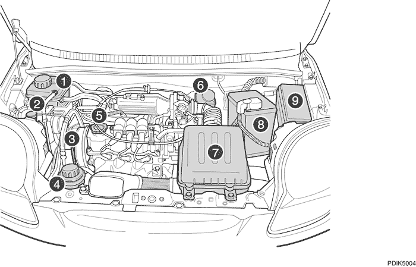
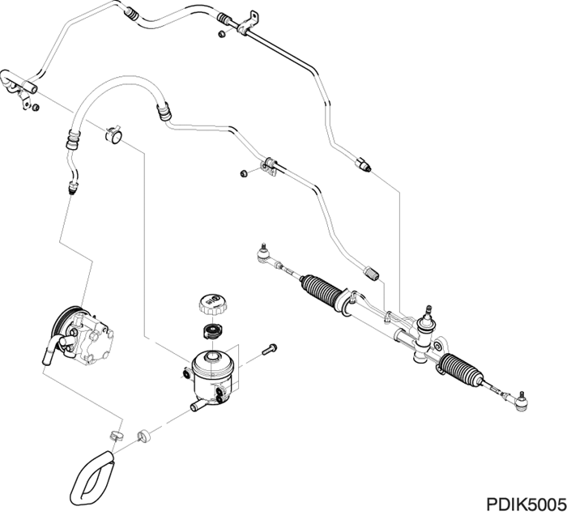
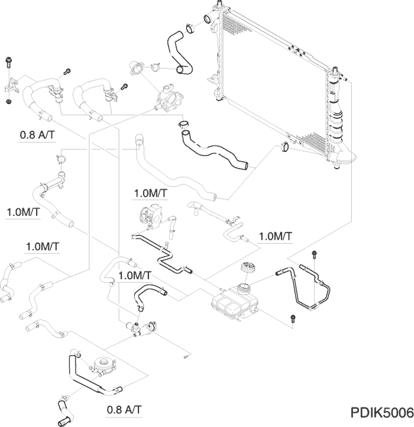
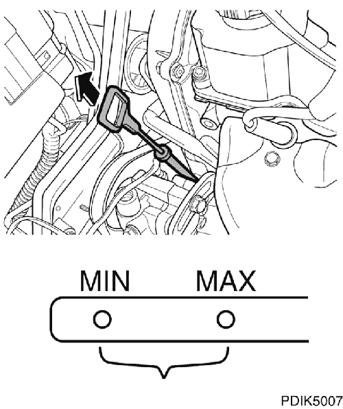
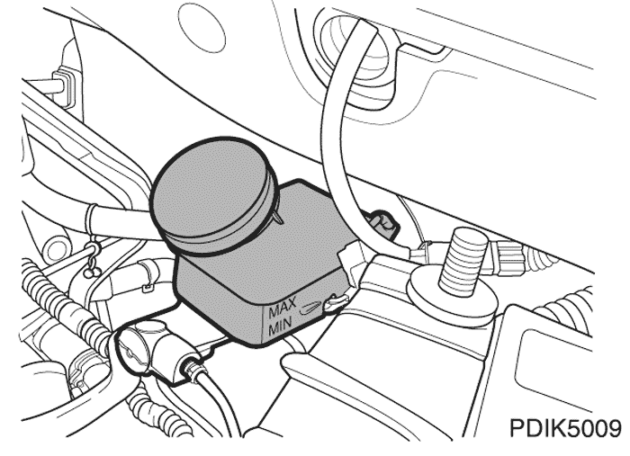
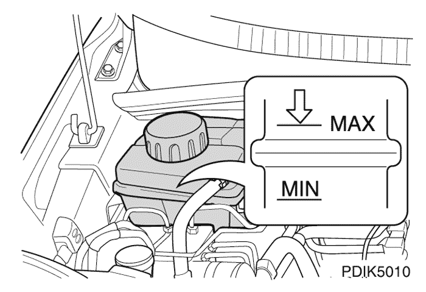
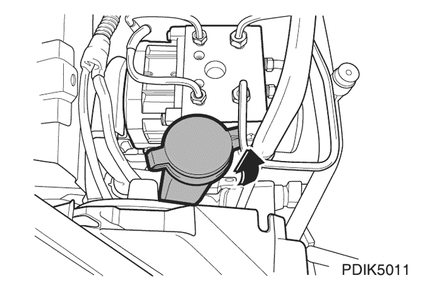
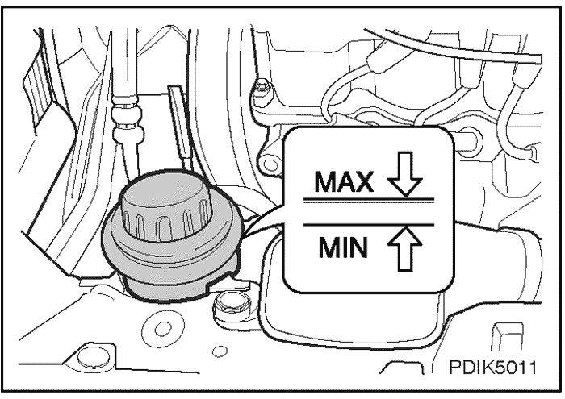
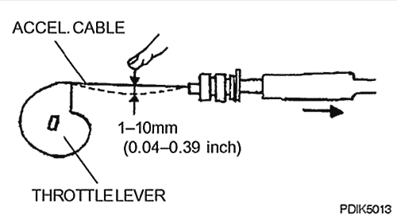
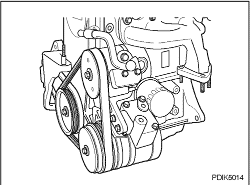

SECCIÓN 2
COMPARTIMENTO MOTOR
1. UNIÓN DE COMPONENTES SUELTA
Compruebe en el compartimento motor si hay componentes que puedan estar sueltos, conexiones eléctricas o manguitos de vacío retorcidos o aprisionados y cualquier otro componente desconectado o que falte como se indica a continuación.



- Depósito del refrigerante
- Depósito de líquido del lavaparabrisas
- Varilla de comprobación del nivel de aceite del motor
- Depósito del aceite de la dirección asistida*
- Tapón de llenado del aceite del motor
- Depósito de líquido de frenos
- Filtro del aire
- Batería
- Caja de relés y fusibles
- Compruebe si faltan componentes del motor o están desconectados.
- Compruebe si las conexiones eléctricas están sueltas o mal conectadas.
- Compruebe si los manguitos de vacío están retorcidos, aprisionados, dañados, doblados o dilatados.
- Compruebe si las conexiones de tubos y abrazaderas de manguitos tienen fugas o están sueltas en los siguientes sistemas.
- - Sistema de combustible
- - Sistema de refrigeración
- - Sistema de la dirección asistida
- - Sistema del aire acondicionado
- Compruebe los componentes del motor que puedan estar flojos.
Si hiciera falta, apriete las abrazaderas, conexiones, tornillos y tuercas, y sustituya o repare los manguitos defectuosos y sus conexiones.
2. POSICIÓN DE CABLES ELÉCTRICOS Y MANGUERAS
Compruebe y asegúrese de que los siguientes manguitos y cables eléctricos están bien colocados y que están a suficiente distancia de piezas móviles o calientes cercanas.
- Manguito de combustible
- Manguito de aire acondicionado
- Manguitos de vacío
- Cable de alta tensión para sistema de encendido
- Cables eléctricos
3. LIBERTAD DE MOVIMIENTOS DE VARILLAJE, VÁLVULAS Y OTROS COMPONENTES
Observe si el varillaje, las válvulas y otros componentes se mueven con libertad.
- Cable del acelerador
- Compruebe el juego libre del cable del acelerador cuando el motor está caliente de la siguiente forma.
- 1) Tire del cable del acelerador hacia la palanca del acelerador.
- 2) Aleje el cable de la palanca del acelerador hasta que ésta empiece a moverse (juego libre).
- Si hubiera que ajustarlo, consulte el punto 9 de esta sección.
- Pedal del embrague
- No hay juego libre del pedal del embrague.
- Sistema de timonería de la dirección
- El mejor método para comprobar su estado es poner el vehículo sobre una superficie plana y que dos mecánicos trabajen en equipo.
- Uno de los mecánicos gira el volante hacia un lado y luego hacia el otro, comprobando su funcionamiento, montaje y estado, así como el montaje de la columna de dirección (con o sin dirección asistida) mientras que el otro mecánico comprueba el juego en los siguientes puntos:
- - Tirantes (no deben estar flojos)
- - Fijación del mecanismo de la dirección sobre el bastidor
- - Juntas universales del eje de la dirección desde el mecanismo de dirección hacia arriba (no deben estar flojas)
- - Compruebe si todas las abrazaderas están bien montadas y apretadas.
- Conjunto del motor de arranque
- 1) Compruebe que el interruptor de arranque y los contactos estén bien instalados.
- 2) Ponga en marca el motor de arranque y compruebe lo siguiente:
- El motor de arranque debe arrancar el motor a velocidad normal.
- El motor de arranque debe funcionar sin hacer ruidos anormales.
Nota: No ponga en marcha el motor de arranque demasiado tiempo ya que podría forzar demasiado la batería.
- Respuesta de arranque del motor
- Arranque el motor y compruebe si el motor funciona normalmente.
- Si el motor no arranca o si se vuelve a parar, compruebe los siguientes elementos. Si necesita más información, consulte el manual de servicio.
- - Sistema de encendido
- - Funcionamiento del control del aire de ralentí (IAC)
- - Sensores y ECM, si fuera necesario
4. RUIDOS INUSUALES
Compruebe si hay ruidos inusuales en el compartimento motor.
Ponga en marcha el motor y compruebe si hay ruidos inusuales. Si se oyen ruidos inusuales, apriete o sujete las piezas flojas y ajuste la holgura entre componentes.
5. FILTRACIONES Y FUGAS EN EMPALMES DE MANGUERAS Y TUBOS, ETC.
Inspeccione visualmente si hay filtraciones y fugas en conexiones y empalmes de mangueras, manguitos, tubos, retenes, juntas y tapones. Apriete las abrazaderas y conexiones según sea necesario.
- Sistema de combustible
- Sistema del aire acondicionado
- Sistema de refrigeración
- Sistema de frenos
- Sistema del embrague
- Sistema de la dirección asistida
- Conjunto del motor
- - Alojamiento del soporte del árbol de levas
- - Culata
- - Bloque de cilindros
- - Cárter de aceite
- - Retenes del árbol de levas, etc.
6. SISTEMA DE LA DIRECCIÓN ASISTIDA
Compruebe si en el mecanismo de la dirección asistida, las tuberías y manguitos hay fugas y holgura suficiente con los paneles, piezas móviles o calientes cercanas.
Apriete las abrazaderas y conectores según sea necesario.

7. PROTECCIÓN DEL REFRIGERANTE DEL MOTOR
Compruebe la protección del refrigerante del motor.
- El ECM acciona el ventilador de refrigeración por medio de un relé de baja velocidad y un relé de alta velocidad en los modelos con o sin aire acondicionado, como se indica a continuación:
Descripción | Modo de funcionamiento del ventilador de refrigeración | Temp. de funcionamiento del ventilador (°C) |
Encendido | Apagado |
A/A apagado o modelo sin A/A | Baja velocidad | 93 | 90 |
Alta velocidad | 100 | 97 |
A/A encendido | Alta velocidad | cuando el sistema del A/A está encendido |
- Compruebe todos los manguitos y conexiones.
- Compruebe si hay fugas en el sistema de refrigeración con el siguiente procedimiento.
- - Corrija el nivel de refrigerante y ponga el motor en marcha a velocidad de ralentí.
- - En vez de un tornillo roscado, coloque el comprobador del radiador en el depósito de expansión.
- - Pueden reconocerse las fugas por donde salga refrigerante.
- - Si la presión baja o sube sin que salga refrigerante, es señal de que hay una fuga interna de refrigerante en el motor provocada por alguna junta de culata defectuosa o alguna grieta en el bloque.

8. COMPROBACIÓN DE TODOS LOS NIVELES DE LÍQUIDOS
Compruebe todos los niveles de líquidos: aceite del motor, aceite de la transmisión, aceite de la dirección asistida, líquido de frenos y del sistema de refrigeración.
- Aceite del motor
- - El nivel del aceite del motor debe comprobarse con el vehículo sobre terreno llano (antes de poner en marcha el motor). Si el motor está en marcha, pare el motor y espere 5 minutos a que vuelva el aceite al cárter motor antes de comprobar el nivel de combustible.
- - Saque el indicador (varilla) de nivel de aceite, límpielo y vuelva a meterlo.
- Saque de nuevo la varilla y compruebe que el nivel de aceite está entre las marcas MÁX. y MÍN. Compruebe también si el aceite en la varilla está contaminado.
- - El aceite en la varilla no debe sobrepasar la marca "Máx.", ya que podría dañar el motor.

- Aceite de caja de cambios manual
- - Con el vehículo sobre una superficie plana y el aceite de la caja de cambios frío, quite el tapón de llenado y compruebe el nivel de aceite. El aceite debe salir por el borde inferior del orificio del tapón.
- - Si el nivel es bajo, añada aceite SAE 75W-85 para cajas de cambio manuales a través del orificio del tapón de llenado hasta que rebose el aceite.
- - Vuelva a colocar el tapón de llenado y apriételo firmemente.
- Líquido de frenos
- - El nivel de aceite del recipiente no debe superar la marca MÁX ni estar por debajo de la marca MÍN.
- - Si el nivel baja por debajo de la marca MÍN, añada aceite hasta llegar a la marca MÁX y luego apriete bien el tapón.

* Límite permitido: Hasta 2 mm (0,08 pulg.) por debajo de la línea MÁX.
Nota: Especificación del aceite DOT 3 o DOT 4
- Refrigerante
- Compruebe el nivel de refrigerante en el vaso de compensación.
- - En nivel del refrigerante debe estar al máximo en el radiador y ligeramente por encima de la marca "MÁX" fuera del vaso de compensación cuando el motor está frío.
- - Si el nivel baja por debajo de la marca "MÍN", añada una mezcla al 50/50 de suficiente agua desmineralizada y anticongelante a base de fosfato hasta superar ligeramente la marca MÁX.
* Límite permitido: Hasta 13 mm (0,51 pulg.) por debajo de la línea MÁX.

- - Para la protección en climas sumamente fríos, use una mezcla de 40% de agua y 60% de anticongelante a base de fosfato.
Nota: No llene en exceso ni quite el tapón del vaso de compensación del refrigerante cuando el motor y el radiador estén calientes. El contenido anticongelante del refrigerante debe mantenerse a un 50% como mínimo y a un 60% como máximo.
- Líquido de lavaparabrisas
- Compruebe el nivel del líquido de lavaparabrisas en el depósito.
- - El nivel del líquido de lavaparabrisas en el depósito debe estar a 2/3-3/4.

Nota: No utilice anticongelante del radiador para la solución del lavaparabrisas. Esto podría dañar la pintura del vehículo.

- Aceite de la dirección asistida
- Compruebe el nivel del aceite con el motor apagado.
- - El nivel de aceite debe estar entre las marcas MÍN y MÁX del depósito.
- Si baja a la marca MÍN o por debajo, llene con el aceite especificado.
* Límite permitido: Hasta 4 mm (0,16 pulg.) por debajo de la línea MÁX.
Nota: Especificación de aceite DEXRON® II
9. VARILLAJE DEL ACELERADOR
- Compruebe si el varillaje del acelerador está obstruido o agarrotado, presenta daños o libertad de movimientos con el acelerador cerrado y abierto al máximo.
- Pise el pedal del acelerador varias veces y compruebe la libertad de movimiento del varillaje del acelerador.
- * Límite permitido de flexión del cable del acelerador: 1 -10 mm (0,04 - 0,39 pulg.).

10. TENSIÓN DE LAS CORREAS
- Compruebe si las correas están desgastadas, agrietadas o deshilachadas.
- Compruebe la tensión de las siguientes correas y ajústelas si fuera necesario.
Nota: Para comprobar la tensión de las correas de una forma fácil, presione moderadamente con el pulgar (aprox. 10 kg) a medio camino entre las poleas y compruebe la deflexión. Si la correa baja 10 mm, es normal.
